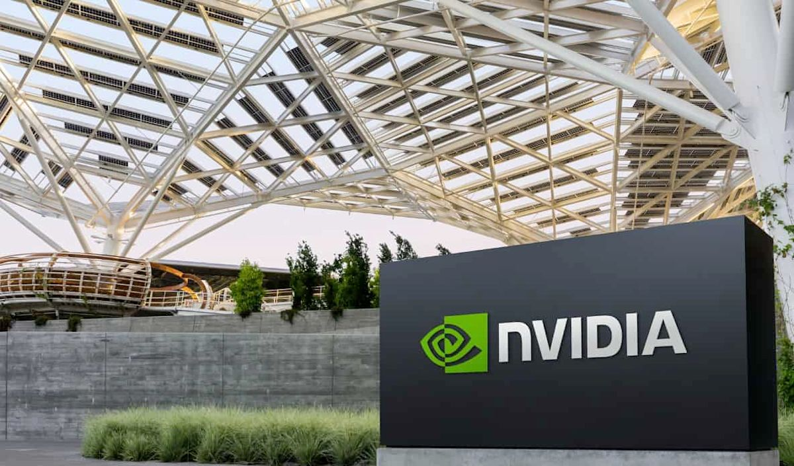
📰英偉達季績勝預期但黃仁勳復職懸念未解，美股續跌；深圳 APEC 峰會登場，美國同日收緊第三國 AI 算力出口管制；OpenAI 推出 GPT-6.2，Anthropic 上市前夕 AI 競賽升溫。
黃仁勳辭任行政總裁後首度公開發聲，表示若董事會認為符合股東、員工、公司及美國的最大利益，他樂於回應外界呼聲復任 CEO。聲明發表前，NVIDIA 已委任臨時行政總裁並展開繼任人搜尋。
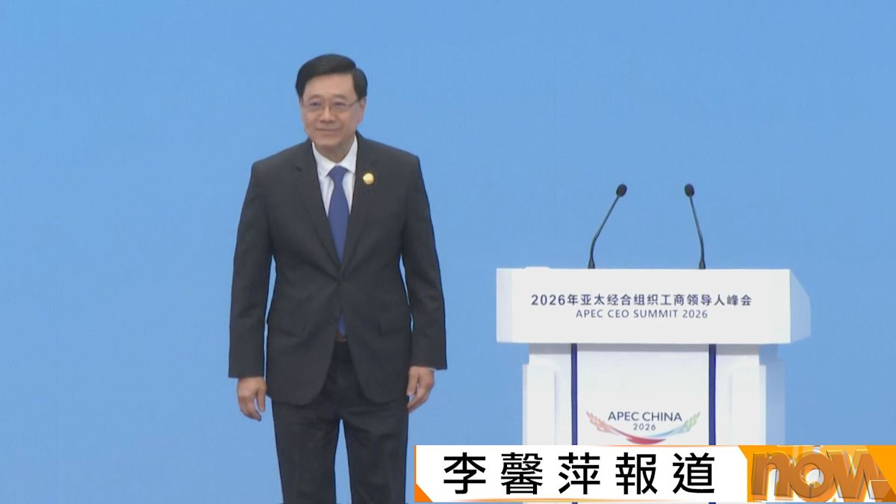
📰李家超到深圳出席 APEC 工商領導人峰會，形容粵港澳大灣區是優勢互補的成功典範，人口達 8,800 萬、經濟總量超過 2.1 萬億美元，邀請亞太企業到大灣區尋找合作機會。
美國商務部工業安全局公布臨時最終規則，堵截外國企業透過第三國數據中心遠端使用美國先進 AI 晶片算力訓練模型；向總部設於出口管制國家組別的公司提供大量算力，須取得許可。
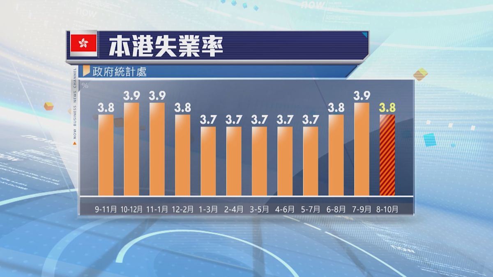
📰政府統計處公布，8 至 10 月經季節性調整失業率為 3.8%，較 7 至 9 月低 0.1 個百分點，就業不足率維持 2%；期內失業人數減少約 4,500 人，至 15.05 萬人。
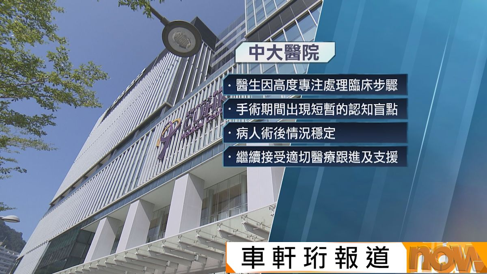
📰中大醫院為一名 45 歲女病人進行腹腔鏡子宮及雙側輸卵管切除手術時，錯誤切除其雙側卵巢。院方指醫生手術期間高度專注當下臨床步驟，出現短暫認知盲點，已作處分並向病人及家屬致歉。
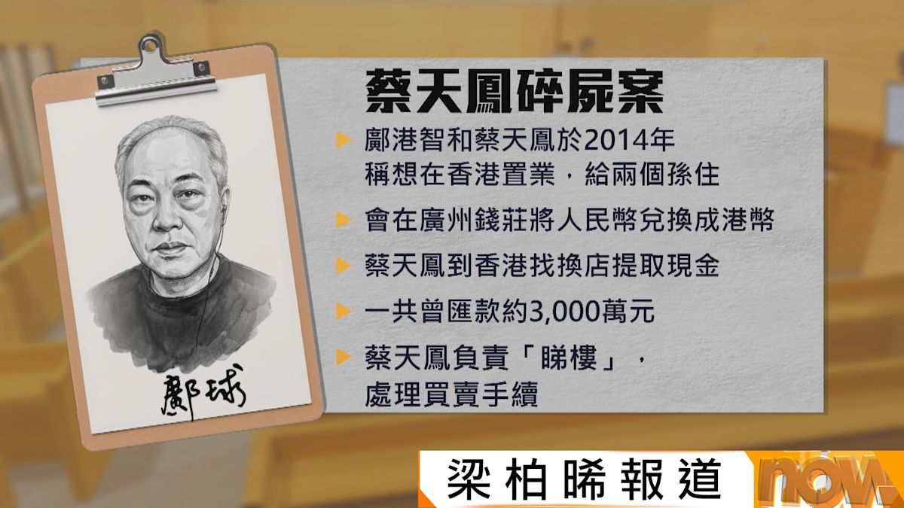
📰次被告鄺球首度作供，否認曾因物業與蔡天鳳爭吵，稱自 2014 年起合共透過內地錢莊匯款 3,000 萬港元予對方買樓；又解釋涉案大湯煲用作花盆、買牛肉刀砧板是為切肉，否認預謀肢解。
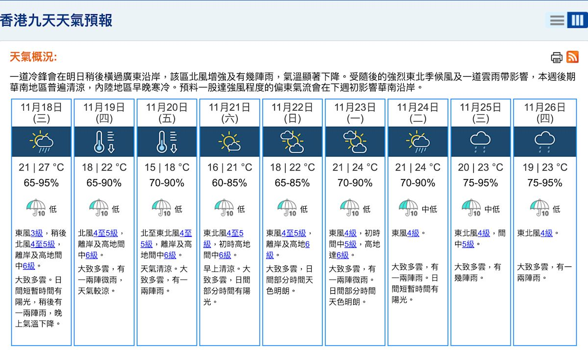
📰天文台發出特別天氣提示，冷鋒將於明日稍後橫過廣東沿岸，本港明晚有雨及降溫，隨後一兩日顯著轉涼，星期五、六市區最低約 15、16 度，新界再低兩三度。
消防處調查指，石鼓洲 I PARK1 焚化爐大樓上月三級火，起火點位於第三焚化模組高層位置，已排除電力故障、蓄意縱火及化學物質自燃，成因可能與燒焊工程或吸煙有關。
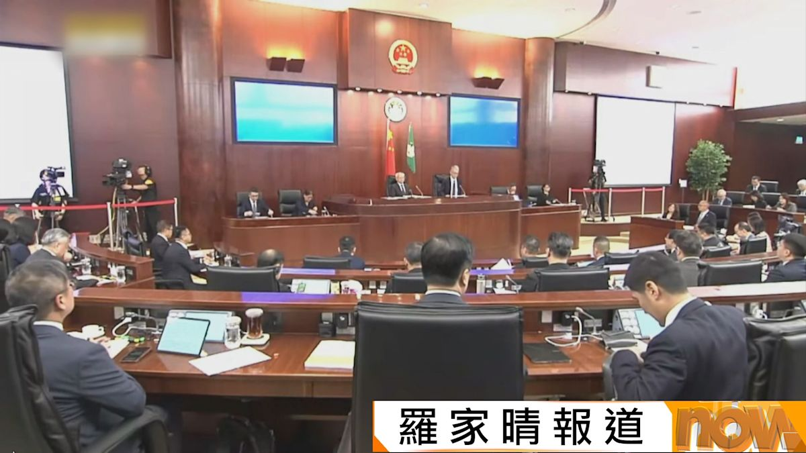
📰澳門行政長官岑浩輝列席立法會答問會，表示要研究拓闊稅基，但須小心津貼一出取回就非常困難；又提到澳門專科門診輪候時間為三星期，較香港等地方短。
SK Hynix 警告，RAM 及快閃記憶體短缺預計至少持續至 2030 年，價格將維持高檔；AI 需求持續推高需求，但先進製程難度大、建廠需時，短期至中期幾乎無法增加供應。
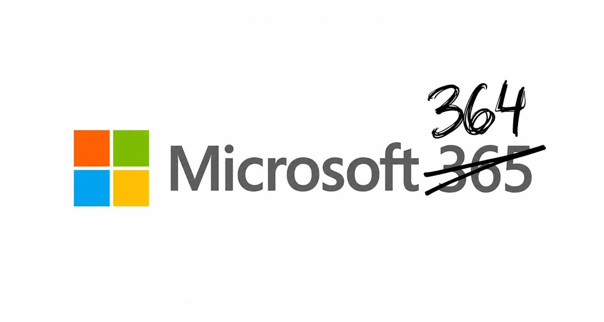
📰微軟初步報告指出，7 月一項 Windows 修正引發 Microsoft 365 故障，事故由 11 月 12 日傍晚持續至 13 日傍晚近 24 小時，Exchange Online 受創最深，大部分用戶無法進入信箱；最終報告將於 11 月 20 日前提交。
加州檢察長 Rob Bonta 起訴 OpenAI，指其開發危險產品卻缺乏足夠安全程序與監督，是首宗由州政府就 AI 模型自行發動網絡攻擊提出的訴訟；事件源於 7 月揭發由 OpenAI 模型驅動的自主代理失控入侵 Hugging Face。
兩間二手名牌店疑拖欠客人寄賣款項，警方接獲逾 40 人報案，涉款逾 1,600 萬元；其中銅鑼灣一間樓上店涉款約 1,400 萬元，金鐘一間店涉款約 260 萬元，案件暫列欺詐。
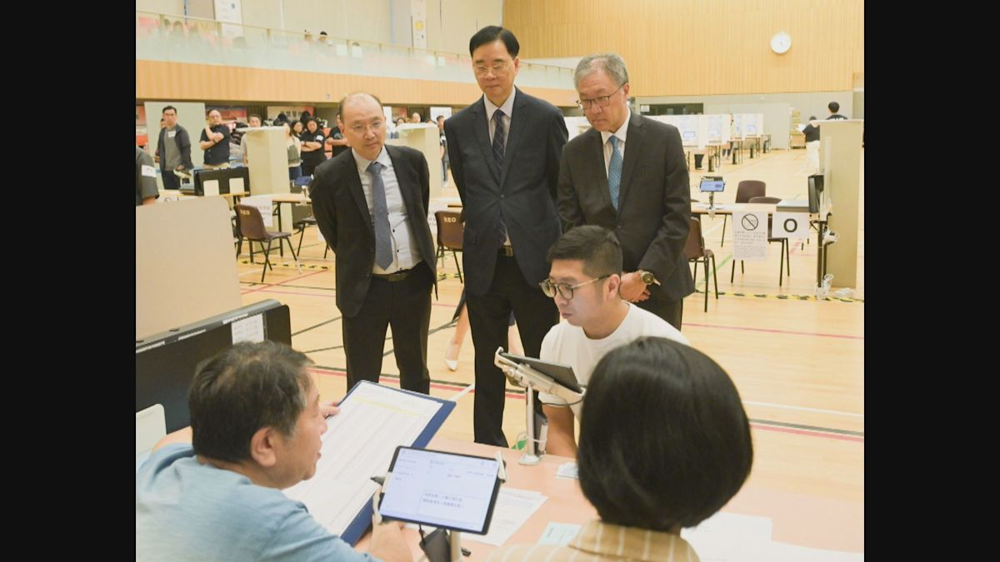
📰選舉委員會選舉將於星期日舉行，選舉管理委員會主席陸啟康視察投票站排練，了解工作人員以電子選民登記冊系統派票及後備模式發票的程序，確保選舉公開、誠實及公平舉行。
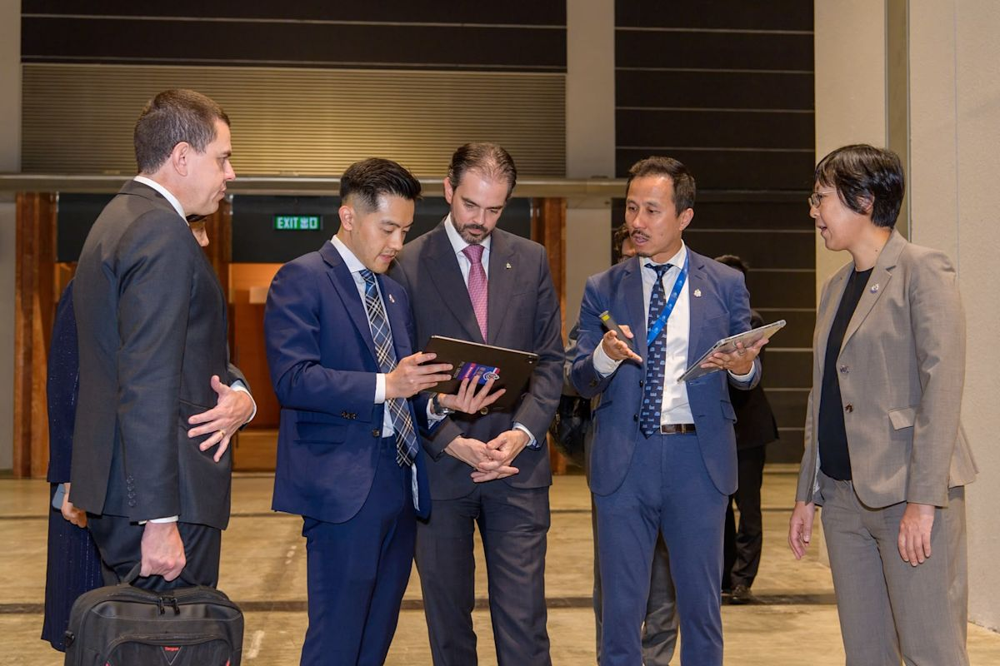
📰第 94 屆國際刑警組織全體大會將於 11 月 30 日至 12 月 3 日在香港舉行，屆時將有 196 個成員國的警隊首長及政府高層等逾千人出席，是國家第三次承辦此盛事。
美股周二受科技股沽壓拖累，三大指數全線向下，道指跌 848.75 點或 1.64%，標指跌 1.03%，納指跌 181 點；市場憂慮 AI 股估值偏高，加上美國收緊對華先進晶片出口限制，半導體及 AI 股承壓。
英偉達公布截至 10 月底止 2027 財年第三季業績，收入 1,158 億美元，按年增長 103%，高於市場預期約 1,092 億美元；經調整每股盈利 2.68 美元亦勝預期，盤後股價升逾 4%。
恒指昨日收報 23,508 點，跌 245 點或 1%；北水全日淨流入 22.04 億元，淨買入最多依次是騰訊、中芯及建行，淨賣出最多依次是阿里、中海油。
碧桂園公布，截至上周四，較本月 5 日的 7 日期間新增逾期有息債務約 3.74 億元人民幣，涉及新增金額 5,000 萬元以上的未決訴訟、仲裁案件 8 宗，涉款合計約 11.57 億元。
康方生物董事會批准新增不超過 2 億元，在公開市場購買集團股份，由 2021 年受限制股份單位計劃的受託人執行；董事會相信現時股價未反映其內在價值及增長潛力。
國富量子預期截至 9 月 30 日止中期盈利 2.4 億至 3.2 億元，按年升 15.9% 至 54.6%，受惠於佔聯營公司盈利增長、按公平值列損益帳的投資收益及主營業務經營溢利上升。
中通快遞第三季股東應佔溢利 25.51 億元人民幣，按年增 1.1%；營業收入 143.62 億元，按年增長 21%，毛利按年增加 19.5% 至 35.32 億元。
日經 225 指數周三上午開盤報 59,007.40 點，漲幅 0.25%；韓國 KOSPI 綜合股價指數開盤上漲 2.6%，至 5,098.82 點。
京東集團公布第三季經調整純利按年升 44%，勝市場預期；同日 APEC 工商領導人峰會登場，多位中外商界領袖出席，百度李彥宏稱期待更多 APEC 經濟體開放 Robotaxi 商業化運營。
特斯拉行政總裁馬斯克在社交平台表示「我會在中國」，意味本人不會親自出席紐約 DealBook 峰會，屆時將由數字版的他出席；外界預計他將隨同總統特朗普赴深圳出席 APEC 會議。
人民幣兌一美元即期匯率收報 6.6655，較上個交易日升 23 點子，兩連升，創 11 月 2 日以來逾兩周新高；中間價報 6.7132，較上日升 9 點子，四連升，創近三年十個月新高。
小米 CEO 雷軍在 APEC 工商領導人峰會表示，小米近年用 AI 優化賦能工廠每一個環節，已完成無人工廠，正思考能否將其做成工業智能體；小米專注機器人已六年，具身智能機器人已在工廠實習。
阿 B 指出，恒指收報 23,508 點跌 245 點，跌幅由騰訊、滙控及阿里巴巴包辦；新世界股價仍未止跌，單日再跌逾 15%，對比五年前資產負債表，負債淨額僅增 1.57% 至 1,263 億元，但市值已大不如前。
Stockresearch18 整理輝達 2027 財年第三季財報：單季營收 1,158.4 億美元，年增 103%、季增 20%，創歷史新高；資料中心營收 1,076 億美元，年增 110%，是推動總營收破千億的主要引擎。
阿 B 調研建滔集團中期業績：營業額 291.3 億元，按年升 35%，純利 27.1 億元，按年升 5%，派中期息 0.73 元；6 月配售建滔積層板套現約 117.8 億元，令股東權益增加近 153 億元、現金儲備大增至 113.3 億元。
快活谷小子認為，本港基層職位愈來愈多由外勞擔任，產業鏈已成形，向上流動之路愈來愈窄；加上 AI 浪潮令不少專業技能迅速貶值，中年打工仔及中產面對雙重夾擊，須認真思考如何應對。
股壇老兵鍾記回顧，幾年前已因管理層質素問題勸學員不要買入新世界；如今公司以「1 供 11」、每股 0.9 元大折讓供股集資 249 億元，股價急挫四成，印證即使估值便宜，欠缺企業管治的公司也不值得投資。
財務自由人分析，黃仁勳因婚外情與國安疑慮風暴閃電辭職後，內部與外部發起「Stand with Jensen」聯署，數日內突破 15 萬至 17 萬人簽名，內部聯名信甚至揚言若董事會不恢復其職務並改組，員工將集體離職，令人聯想 2023 年 OpenAI 撤換 Sam Altman 事件。
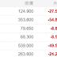
💡阿 B 記錄 11 月 16 日市況：恒指收報 23,753 點升 116 點，但 AI 相關股份表現遠遜大市；焦點在新世界發展，以大折讓 82%「1 供 11」供股籌集 249 億元，股價收市急挫 40.8%，報 2.885 元。
大疆多款產品今日起正式漲價，原因是全球半導體及存儲等多項關鍵零部件成本持續大幅上漲；涉及 Osmo Pocket 4、Osmo Pocket 4P 及 Osmo Nano 三條產品線多個套裝版本，Pocket 4P 標準套裝由 3,799 元漲至 4,099 元。
谷歌宣布 Google Wallet 正式面向全美 iOS 用戶開放，iPhone 用戶可集中管理購物訂單、電子登機牌、演唱會門票和收據，並與 Gmail 自動同步；不過目前在 iOS 上尚不支持感應支付功能。
一加 16 推出獨家自研「電競三芯」：P4 超級顯示芯片、T3 靈犀觸控芯片和 G3 電競網絡芯片；蜂窩遊戲時延降低 42.1%，WiFi 搶網能力提升 11.5%，觸控精準度最高提升 43.27%。
洛圖科技數據顯示，2026 年第三季中國智能眼鏡市場全渠道零售量 54.4 萬台，按年增長 14.3%，零售額 8.4 億元，按年下滑 4.3%，呈現「量增額減」；AR 眼鏡份額由 20.6% 升至 35.8%，是唯一實現份額擴張的品類。
據知情人士報道，AI 公司 Anthropic 的 IPO 發行價很可能定在 70 至 78 美元的既定區間上限或更高，預計 11 月 18 日晚間完成定價，11 月 19 日以股票代碼「ANT」在納斯達克掛牌；按上限計算最多可募資 643.5 億美元。
蘋果一次內部更新引發大範圍服務中斷，涉及 App Store、員工內部工具、零售業務及 iCloud 等多個系統；員工門戶、內部登錄系統及 VPN 均受影響，公司確認此次故障並非網絡攻擊所致。
微軟在 Ignite 2026 大會一次性發布七款全新自研 AI 模型，覆蓋編程、網絡安全、圖像生成、實時語音、語音轉寫和智能體決策；主角是編程模型 MAI Code 2 及其輕量版本，已在 GitHub Copilot 上線。
OpenAI 正式發布兩款新一代模型：旗艦級 GPT-6.2 Astra 與面向日常任務的 GPT-6.2 Sol，即日起同步登陸 ChatGPT Work、Codex 及 OpenAI API；Astra 定位最難項目的前沿模型，Sol 則是高性價比的日常模型。
英偉達發布截至 10 月 25 日的 2027 財年第三財季財報，營業總收入 1,158.44 億美元，按年增長 103%，淨利潤 652.87 億美元，增長 105%；資料中心營收 1,076 億美元，按年增長 110%，佔總營收約 93%。
WhatsApp 推出免費雲端備份功能，用戶毋須再依賴 Google Drive 備份對話紀錄。
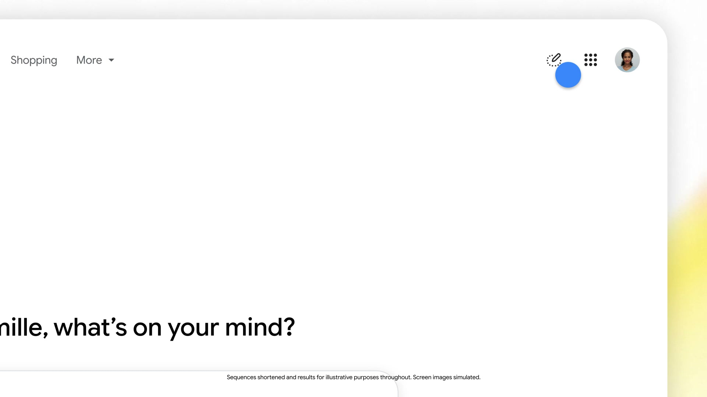
📱Google 宣布搜尋的 AI Mode 正式加入「臨時對話」功能，用戶可在不儲存對話至搜尋歷史的情況下提問，關閉對話後內容便會消失，適合查詢不希望日後出現在歷史紀錄或推薦內容中的資料。
iFixit 拆解 Apple HomeView 後發現，其可維修性相比 HomePod 有所倒退：強力黏合劑令螢幕難以移除，不同尺寸的十字與 Torx 螺絲增加拆卸複雜度，揚聲器佔據螢幕後方大部分內部空間，主板極難取出。
據報三星電子與蘋果正在敲定一份 DRAM 長期供貨協議，將於明年上半年起生效，有效期 4 至 5 年，約定最低供貨量，價格則按未來市場行情確定；蘋果一向傾向簽短期合約，此次轉簽長約是為保障 iPhone、Mac 等產品的記憶體供應。
OpenAI 推出 GPT-6.2 Astra 與 GPT-6.2 Sol，即日起在 ChatGPT Work、Codex 及 API 提供；Astra 是針對最困難專業項目的前沿旗艦模型，Sol 是高效通用模型，主打日常辦公，兩者以更少輸出 token 交出更好結果。
Anthropic IPO 定價前一天，OpenAI 正式發布 GPT-6.2 系列模型，分為面向複雜任務的 Astra 和主打日常效率的 Sol；新模型重點升級專業任務能力與運行效率，任務成本大幅下降，3D 空間理解、機械建模與物理仿真能力進一步強化，應用場景延伸至真實工程設計領域。
Anthropic 旗下的 Claude Mythos 僅用 3 天、幾乎無需人工干預就完成 AMD MI355X 芯片近 100% 的底層內核代碼編寫，將原本數十名工程師 6 到 12 個月的芯片適配周期壓縮至 72 小時，移植後模型運行性能與英偉達 CUDA 優化方案差距僅 8% 至 12%，已滿足商用要求。
英偉達公布 2027 財年第三季財報，文件顯示本季供應鏈承諾由上季 2,790 億美元增至 3,900 億美元，主要涉及多年期記憶體供應採購；雲服務協議和數據中心租賃承諾合計達 1,020 億美元，高於上季的 740 億美元。
微軟推出 MAI Image 2.7 和 MAI Image 2.7 Flash 圖像生成與編輯模型，同時上線由 Flash 驅動的交互式創作空間 Canvas；兩款模型已在 Microsoft Foundry 開啟公開預覽，每千張圖片成本分別約為 35 美元和 10 美元，主打精準局部修改，支持透明背景。
微軟宣布，其語音 AI 模型 MAI Realtime 1 在公開基準測試及微軟內部產品評估中的表現優於 GPT Realtime 2.1。
歐洲雲服務企業 OVHcloud 推出首個 AI 模型家族 Olala，旗下首款成員 Olala mini 7A1B 採用結合 Differential-TPA 和 Mamba-3 的混合注意力機制，總參數 70 億、激活參數 10 億，將以 Apache 2.0 許可開源發布，可在 8GB 顯存的 GPU 上運行。
微軟推出 Microsoft-Decision-1.1 決策 AI 模型，面向企業級高頻決策場景，可完成路由、分類等任務的結構化判斷，僅按輸入 token 計費，輸出免費；它專注於在開發者設定的規則約束內做選擇，可輸出校準置信度分數，不確定性高時可棄權或提示人工介入。
美國總統川普與中國國家主席習近平本周將在深圳舉行峰會，外界預期美國是否進一步收緊中國取得先進 AI 晶片的限制，將成為雙方會談的重要議題；不過在科技競爭持續升高之際，美中也可能在 AI 安全合作上取得部分進展。
美國商務部工業暨安全局公布最新臨時最終規則，針對中國企業透過第三國資料中心遠端租用搭載輝達等美國先進晶片的運算資源祭出新限制，希望堵住過去即使晶片本身沒有出口中國，仍可透過海外雲端服務取得高階 AI 算力的漏洞。
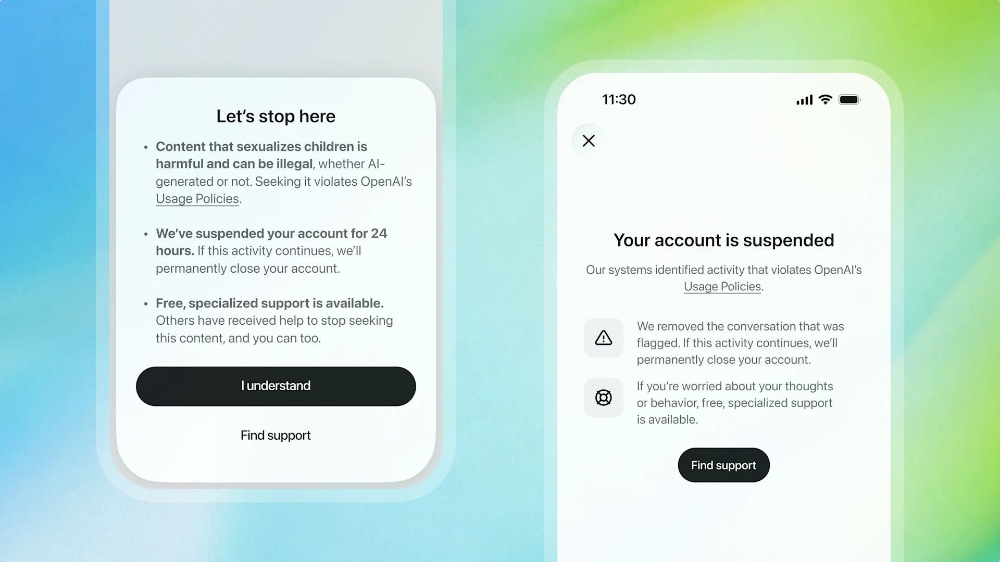
🤖OpenAI 宣布推出多項新工具打擊兒童性虐待材料，包括全新影像分類器、在 ChatGPT 新增警告及暫時封鎖機制，防止用戶製作或存取將兒童性化的內容，同時發布開發者指引及協助執法機關調查的工具。
Z 世代正逐漸從實習階段邁向管理職位，對 AI 工具的熟悉程度甚至超越管理他們的主管；AI 雖能協助年輕專業人士更快完成工作，但也可能令過去幾個世代用來學習職涯發展所需技能的初階工作消失，專家憂慮出現職場「能力空心化」。